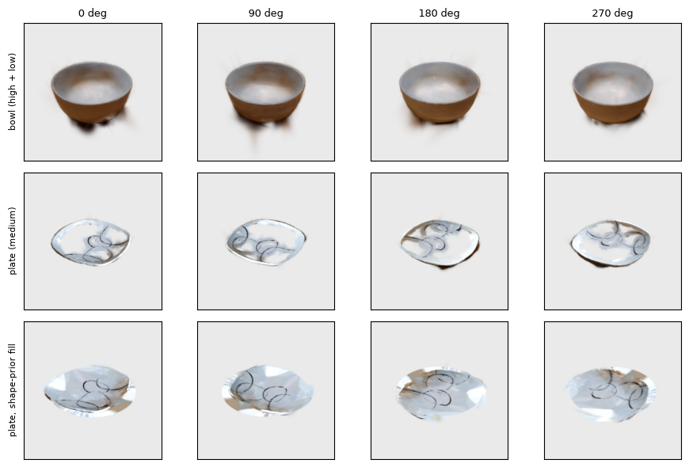

Scanned Objects: Bowl and Plate
The bowl and plate are cut out of the same scan. Their measured sizes against a ruler: plate about 26 cm (ruler 25.5 cm), bowl about 16 × 14 cm (ruler 13.8 cm).

The glossy white plate is textureless, so the optimiser leaves translucent patches and a warped rim, and more iterations did not help. A shape prior fills it: the measured dish (25.5 cm diameter, 2.8 cm high) is fitted to the splat, Gaussians off the surface are dropped, and flat Gaussians are added where the surface is open.
